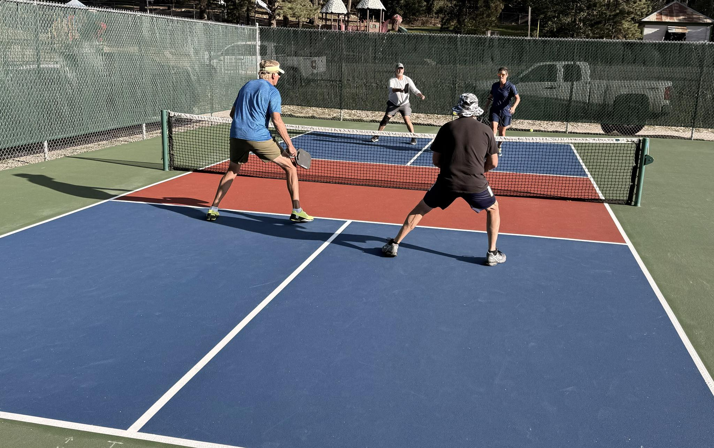
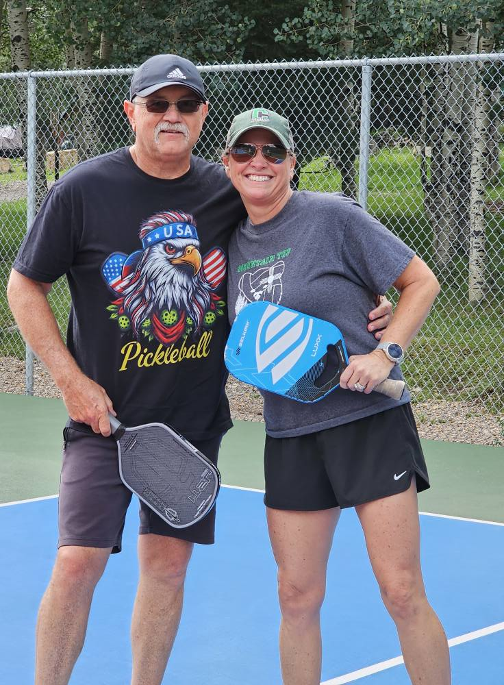
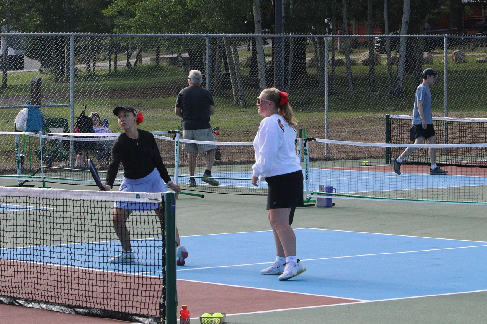
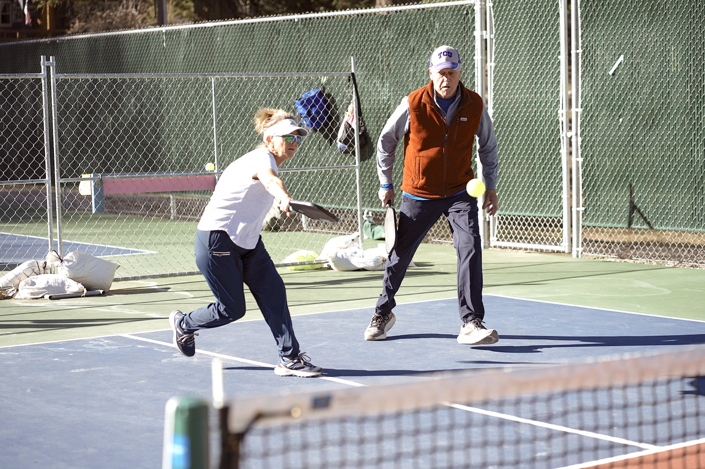
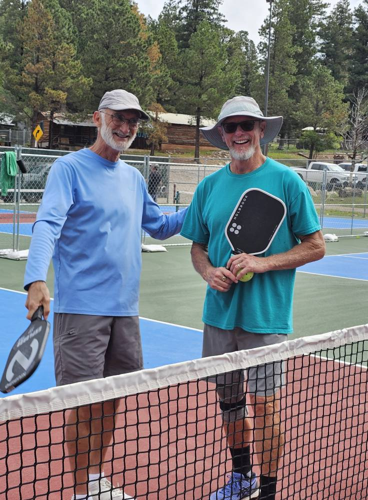
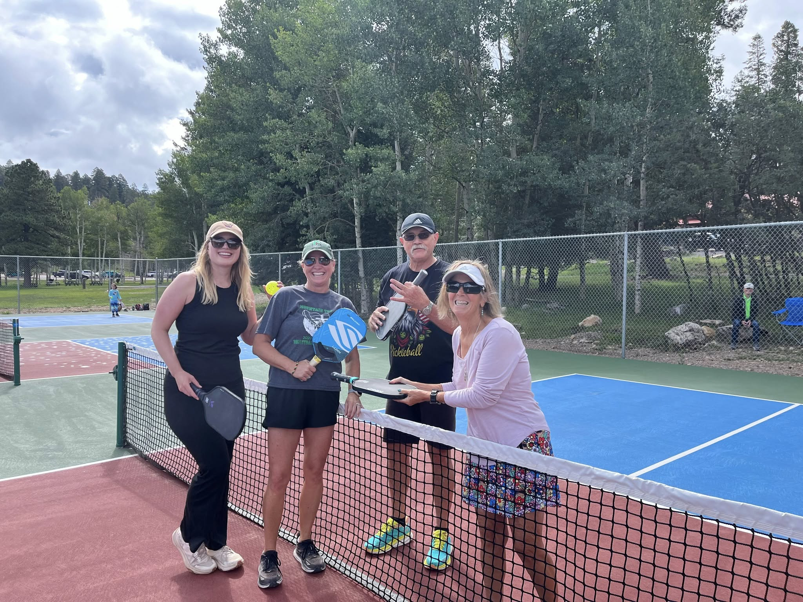

A Real Pickleball Town
Cloudcroft is a real pickleball town, not just a place with a painted court or two. Zenith Park has six outdoor public courts with permanent lines, free play with no reservations needed, and an active local club that welcomes visitors.
Pickleball fits Cloudcroft unusually well. The summer weather is cooler than the valley below, the town draws repeat visitors with flexible schedules, and the courts are right in the center of town. You can play for an hour or two and still have a full Cloudcroft day — grab lunch on Burro Avenue, hike Osha Trail, or play a round of disc golf at the same park.
The Pickleball Addicts of Cloudcroft (PAC) run organized drop-in play on Tuesday, Thursday, and Saturday mornings at 8:00 AM. Visitors are welcome. Bring your paddle, introduce yourself, and you’ll get picked up for a game.
Pickleball at 9,000 Feet








Cool Summer Play
While Alamogordo and Las Cruces hit triple digits, Cloudcroft stays 20–30°F cooler. Morning play at the courts is comfortable all summer long.
Visitors Welcome
The PAC runs drop-in play three mornings a week. Show up with a paddle and you’ll get matched into a game. The group is social and welcoming to all levels.
More at Zenith Park
After your game, Zenith Park also has the Byron Ligon 9-hole disc golf course, a pavilion, and green space. Burro Avenue restaurants are a short walk away.
Visit the Courts
Everything you need to know before you play.
Location
Zenith Park, Cloudcroft, NM 88317. In town, easy to find. Parking at the park.
Hours & Schedule
Courts open dawn to dusk, year-round (weather permitting). PAC drop-in play: Tuesday, Thursday, Saturday at 8:00 AM. Check their Facebook group for schedule changes.
Contact
575-682-2411 (Village of Cloudcroft)
pickleballaddictsofcloudcroft.com
Elevate Cloudcroft courts page
Good to Know
Bring your own paddle and balls — no on-site rental. Courts are outdoor with no shade. Afternoon wind and summer thunderstorms (June–August) can end a session. Morning play is best. Altitude: 9,000 ft — hydrate and pace yourself.
Local Coverage
Cloudcroft Reader — Village Meeting Recap. March 2026 reporting on court repairs and community investment in Zenith Park pickleball infrastructure.
Elevate Cloudcroft — Pickleball in Cloudcroft. Community overview of the courts, free play policy, and the PAC club.
Grab Your Paddle
Six free courts, mountain air, and a welcoming local club. Pickleball at 9,000 feet is one of the best easy wins in Cloudcroft.